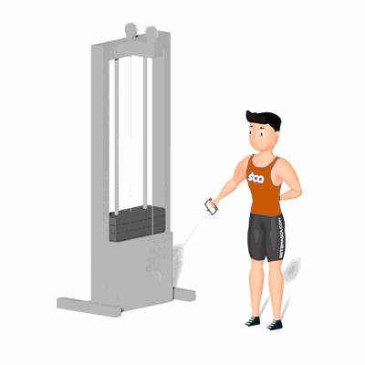

Cross Over Unilateral Polia Baixa

Exercício para fortalecimento e correção de assimetria muscular dos peitorais, com enfoque ao músculo peitoral maior.
Ficha Técnica
Tipo: Musculação
Grupo Muscular: Peito
Aparelho: Nenhum
Músculos: Nenhum
Como realizar
- Pegue na alça da polia baixa. Coloque-se em pé e ao lado da polia;
- Afaste a alça para o lado, mantendo o cotovelo sempre fixo;
- Baixe a polia para o lado até que os músculos do peito fiquem esticados, mantendo sempre o cotovelo fixo;
- Eleve o braço próximo ao peito e pare quando sua mão chegar na altura da cabeça;
- Retorne a posição inicial e repita a quantidade de vezes que o professor indicou.
 RC STORE
RC STORE